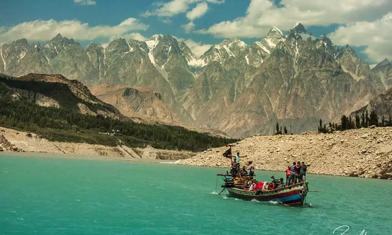
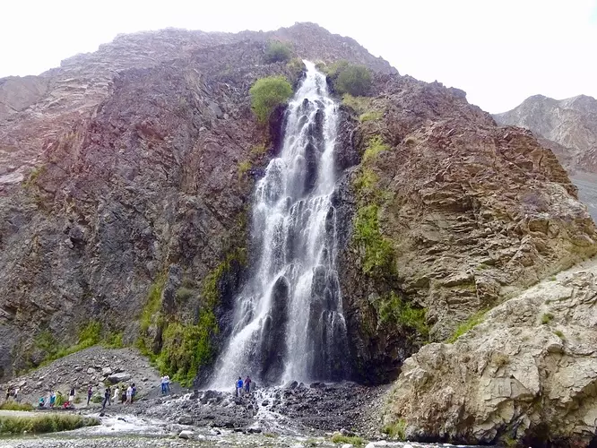

Pakistan is one of the best touring places in the world. Every place in Pakistan is worth seeing and Hunza Valley is one of them. If you want to explore the hidden gems of Hunza Valley, then stick to the end of this article and you will get to know the places to visit in Hunza. If you are fed up from the daily hustle and bustle and want to get rid of the boredom to enjoy some precious moments of life then nothing is better to explore the hidden gems of Hunza Valley. Guys! Hunza Valley is heaven on Earth. People come here to enjoy their holidays and kickoff their daily hassle. It gives you another look of beauty which is hidden from many of us. The lush green and enchanting beauty of the Hunza valley will make you understand nature in a better way. Hunza is the most beautiful and captivating place in Gilgit Baltistan, Pakistan. It is famous for its wonderful arresting sceneries. Its panoramic views make it a favorite among the vacation lovers.
Manthoka waterfall is a waterfall in the extreme northern region of Pakistan. It is located near Madhupur, Skardu Gilgit Baltistan. It is one of the most beautiful waterfalls in Pakistan. The lush green grassland, high mountains, and freshwater streams that go to the Indus make one feel fresh and refrain from your worries of the world.
It is a fabulous place for sightseeing and photography. The height of the Manthoka waterfall from the ground is 180 feet and tourists camp here, do hiking, fishing, and enjoy the charismatic views. How to reach? From Skardu City, you have to follow the Kargil-Skardu road. On Kargil-Skardu road following villages will come on your way: Hussainabad, Thorgo, Ghasing, Parkutta, and Manthoka. In Manthokha village, a stream is running downstream and falls into the Indus River. There is a village Madhupur on the east side of this village and a road Manthoka-Madhupur road, that shall lead you towards your beautiful destination Manthoka Waterfall.